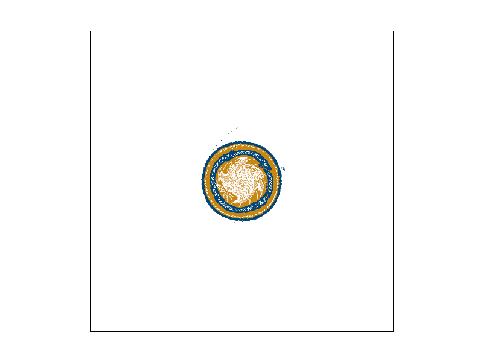
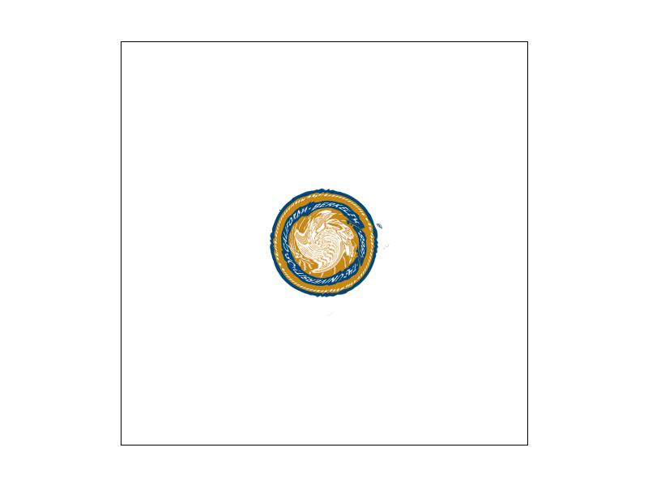

Overview
Give a high-level overview of what you implemented in this project. Think about what you've built as a whole. Share your thoughts on what interesting things you've learned from completing the project.
Section I: Rasterization
Part 1: Rasterizing single-color triangles
First, we find the bounding box of the given triangle by using the max/min x and y coordinates. This ensures that we don't sample the entire frame buffer. Then, we iterate through all of the pixels in the bounding box and color them if the center of the pixel is inside of the triangle. To determine this, we compare the vector between the point and each vertex of the triangle with the normal vectors of the triangle edges, and check if the signs of the dot products are the same. This accounts for winding in either direction.Part 2: Antialiasing triangles
In order to perform supersampling we treat the image as a larger one, scaled by sqrt(sampling rate) in both directions. We store the sampled pixels of this image in the framebuffer, which is just a vector of colors, whose length is equal to the number of pixels in the expanded image. When we write the final image, we essentially scale down this larger image by averaging "squares" of pixels that are the size of the sample rate. This produces softer edges on the triangles in the final drawing, and reduces aliasing by appxorimating how much of each triangle is in each pixel, rather than just doing a binary check. We still used the bounding box technique and interiority check, but we scale up all coordinate points (in the input space) to match the new expanded space.|
|
|
|
|
|
As an aside, in our original approach, we tried downsampling each "square" of pixels as we were iterating, rather than at the end when resolving the framebuffer to the screen. We thought that this would reduce memory costs, since the frmaebuffer would not have to be larger for a higher sampling rate. However, this resulted in there being white lines on the edges of triangles, because this on-the-fly averaging could not properly take into account two triangles occupying the same square. We considered methods which involved averaging the colors of adjacent triangles, however, this still resulted in artifacts and inaccurate coloring, because whenever we were averaging, we were losing information about the "location" of where the color was concentrated. Thus, we concluded that we could not resolve the framebuffer until after all triangles had been rasterized.
A route we also explored was using jitter sampling, although in the end the code ended up getting deleted. The idea of jittersampling was to avoid supersampling in a uniform grid as way to reduce certain artifacts. I tried following along with the example outlined in https://graphics.pixar.com/library/MultiJitteredSampling/paper.pdf. One issue I initially ran into was that I generated the random jitters for each triangle, due to this randomness on the edges between two triangles single points would be left out, if a sample point jittered outside of each triangle due to randomness. To fix this I precomputed one jitter so it could be consistently applied to each triangle and this fixed the gaps. This still seemed to me like it would produce artifacts since the same jitter was being used everywhere, and I considered precomputing a jitter separately for each pixel, but this seemed to memory intensive to be correct. Unfortunately in a mad rush of debugging I deleted all my work on this and didn't have time to reimplement it, but I still wanted to talk about it here since it was a fun endeavour.
Part 3: Transforms
For our robot, we tried adding textures from the existing files, including eyes on the face. We also tried to orient the arms in such a way that they were evenly distributed around the head, while also attempting to retain some semblance of its cubemanity. Finally, we made the body slightly thinner because otherwise the arms were inside of it.
Section II: Sampling
Part 4: Barycentric coordinates
Barycentric coordinates are a way of mapping the interior of a triangle to a new "normalized" space represented by three values: alpha, beta, and gamma. This is useful because Barycentric coordinates behave consistently regardless of the shape or size of the triangle, in that the sum of the three values is always 1 (and consequently each individual value ranges from 0 to 1). Furthermore, each value has a well-defined meaning: namely, alpha represents how close a point is to vertex 'A', beta for vertex 'B', and gamma for vertex 'C'. This can be seen clearly in this demonstration:Each triangle has the same colors inside of it, even though they are oriented and shaped differently. In this case, Barycentric coordinates are being used to map colors to each point inside of the triangle, and as such, each triangle has a magenta corner, a yellow corner, and a cyan corner. The rest of the colors are the result of combining some combination of the three colors based on how far they are from the associated vertices.
Additionally, here is that same methodology applied to many triangles, in a circle (test7):

Part 5: "Pixel sampling" for texture mapping
Pixel sampling is where we take the uv coordinate of a point, and sample the corresponding texture at that location. Nearest does this by sampling the single closest pixel of the texture and taking that color. Bilinear finds the 4 nearest pixels, and takes a weighted average of each of their colors weighted by distance to the sampled coordinates uv.|
|

|
|
|

|
Part 6: "Level sampling" with mipmaps for texture mapping
In level sampling we use a precomputed set of lower res versions of a texture to speed up computation during rendering. This can also have the effect of aliasing, as the lower res images are naturally blurred.Bilinear pixel sampling is slower computationally but generally produces smoother images in the center of textures. Nearest is more efficient, and potentially applicable when the texture is very small/low res.
Level sampling reduces aliasing, but requires less computation power since the mipmaps are precomputed. More antialiasing than bilinear, as it samples a blurred image to begin with.
Number of samples per pixel greatly increases the clarity of edges, but provides less blur than level sampling, as more supersampling just accurately sample the default texture. This method is also very computationally expensive, going linearly with super_sampling rate or quadratically with the edge size of the supersample grid.
|
|
|
|
|
|
Here we can see that mipmapping blurs the image the most, while bilinear pixel sampling and supersampling slightly reudce the jagged edges at the center of the figure.
Section III: Art Competition
If you are not participating in the optional art competition, don't worry about this section!